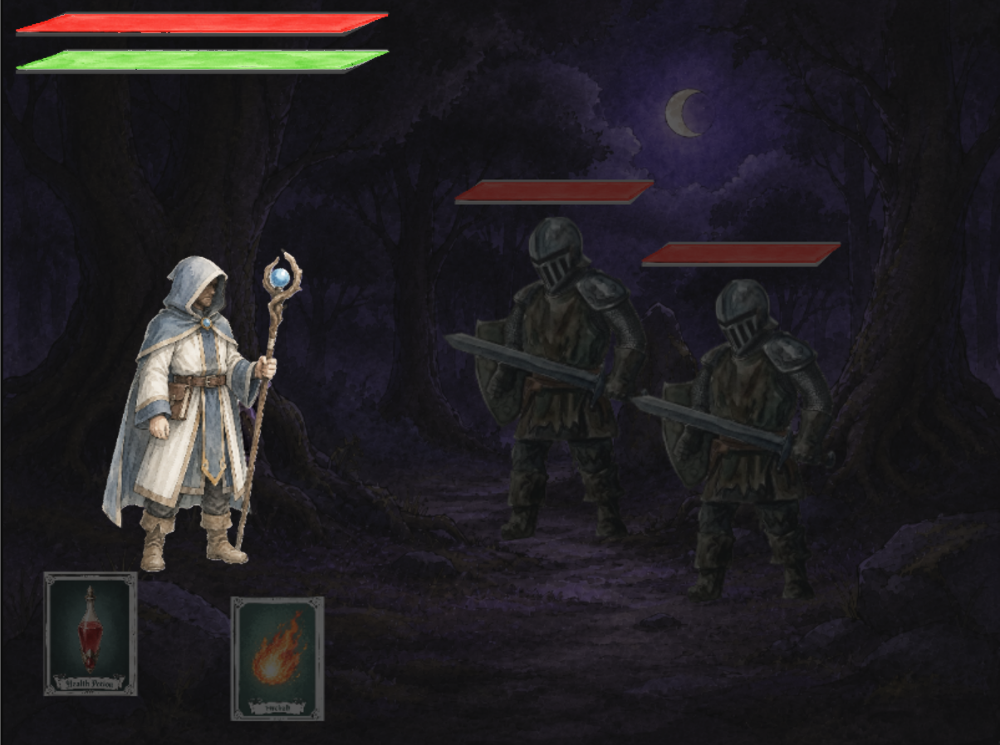
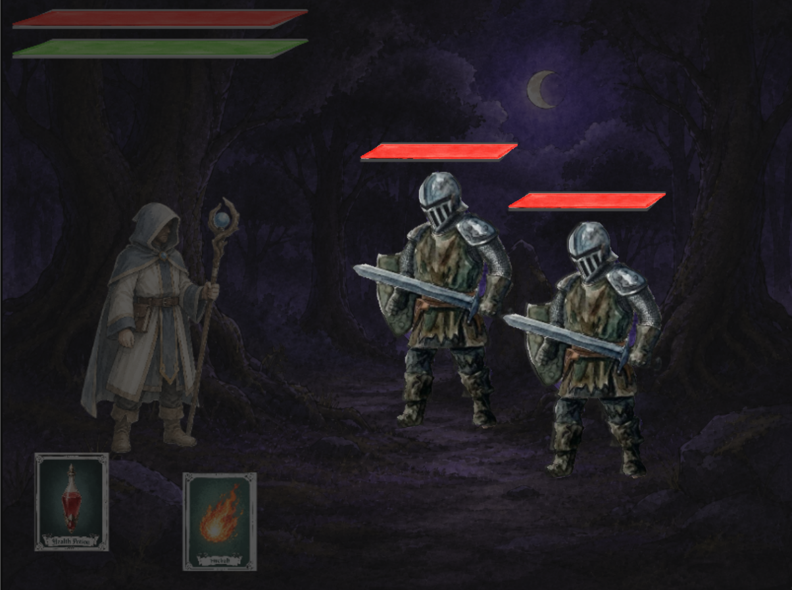
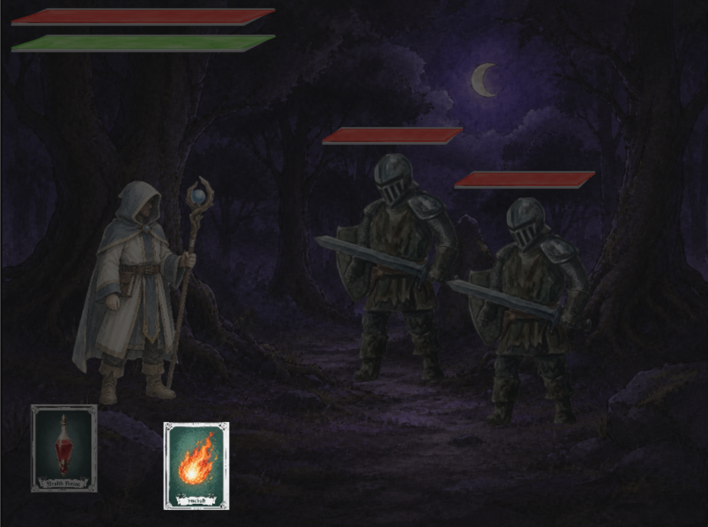
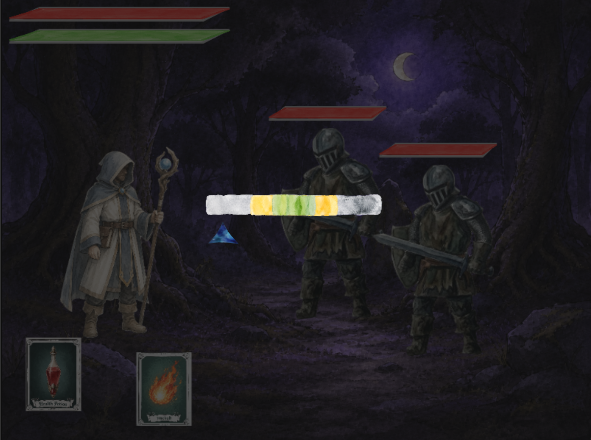
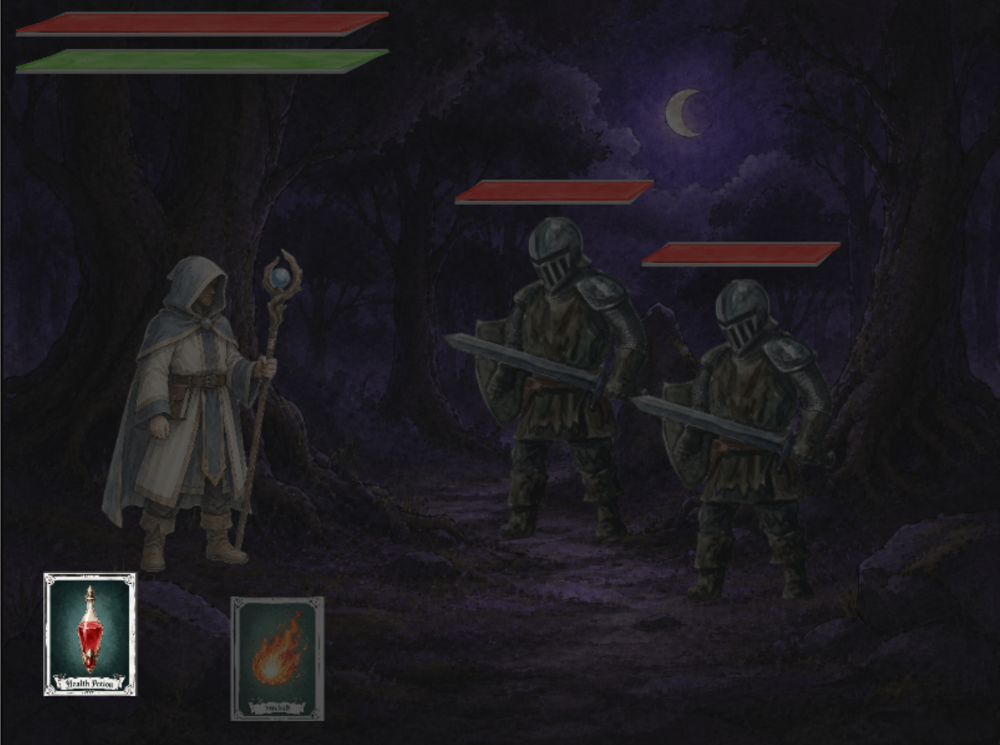

You are Edrick, a fallen knight returning to reclaim his honor.
Fight through four floors of the ancestral castle — from the tutorial forest to the Throne Room —
building your deck, leveling up, and perfecting your parry timing. Death resets your run, but
permanent cards and experience survive. Defeat the Forgotten King to win.
Combat Overview
Player Turn
During your turn, select a card from your deck to play. Cards cost Stamina to use. Click a card to select it, then click an enemy to target it.
Attack cards deal damage to one or all enemies.
Defense cards skip targeting and prepare you to parry.
Healing cards restore health.
If you lack stamina, the card cannot be played.
Enemy Turn
After you play a card, enemies attack one by one. Before each enemy strike, the Parry Bar appears.
Press Spacebar when the parry icon is inside a zone.
Each enemy attacks in sequence until all have acted.
Then the turn returns to you.
Win / Loss
Victory: All enemies in the room are defeated.
Defeat: Your health reaches 0. The run ends and progress resets.
Boss rooms have a single powerful enemy. Regular rooms spawn 1–3 enemies.
How to Play

Player Character
You control Edrick, the fallen knight. Your health, stamina, and current deck are displayed during combat. Keep an eye on your resources — managing stamina for card plays and health for survival is key to reaching the Throne Room.

Enemy Encounter
Each room spawns 1–3 enemies that attack in sequence during their turn. Enemies have distinct attack patterns and damage types. Boss rooms feature a single powerful foe with devastating attacks — study their timing carefully.

Attacking
On your turn, select an Attack card and click an enemy to target it. Physical attacks scale with Strength, while Magic attacks scale with Intelligence. AoE cards hit all enemies at once — great for clearing groups.

Parry Bar
During the enemy turn, the Parry Bar appears before each strike. Press Spacebar when the moving icon lands in a zone. A Perfect Parry negates all damage and grants stamina, while a Miss costs you dearly.

Healing
Healing cards restore your health without requiring a target. Their potency scales with your Vigor attribute. Use them strategically — healing at the right moment can turn a losing battle into a decisive victory.
Cards
Card Types
Attack Physical — Melee strikes scaled by Strength.
Attack Magic — Spell damage scaled by Intelligence.
Defend Physical — Brace for impact; guarantees a Perfect Parry.
Defend Magic — Arcane barrier; guarantees a Perfect Parry.
Healing — Restores health scaled by Vigor.
AoE Physical / Magic — Damage all enemies at once.
Deck Building
Your Battle Deck holds up to 5 cards.
Choose cards in the Battle Lobby before each fight.
Cards have Stamina Costs and may require minimum attributes to equip.
Some cards are Permanent and persist across runs.
Run-only cards are lost when you die.
Card Rarity
Common — Basic, reliable cards.
Uncommon — Slightly stronger with better scaling.
Rare — Powerful effects and higher scaling.
Epic — Very strong; often boss rewards.
Legendary — The rarest and most devastating cards.
The Parry System
The parry bar appears during the enemy turn. Timing is everything.
Parry Tiers
Perfect Parry — Negates all damage. Grants a large stamina boost. Triggers when the icon is in the smallest (green) zone.
Normal Parry — Reduces damage by 70%. Grants a small stamina boost. Triggers in the middle (yellow) zone.
Miss — Full damage taken. Stamina is drained. Occurs when the icon is outside any zone.
Parry Mechanics
The parry icon moves automatically across the bar.
Its speed is influenced by your Dexterity and current stamina.
The parry zones shrink as your stamina decreases.
Playing a Defense Card auto-sets the parry result to Perfect for that enemy's attack.
Attributes
Earn XP in combat to level up. Each level grants 1 attribute point to distribute in the Battle Lobby.
Strength
Scales physical attacks and physical defense cards.
Increases damage of Slash, Heavy Strike, and melee cards.
Improves shield block effectiveness.
Dexterity
Optimizes combat efficiency and parry timing.
Slows the parry icon movement.
Improves critical hit chance.
Scales bow and precision cards.
Intelligence
Enhances magical spell cards and arcane defenses.
Increases Fireball, Frost Lance, and spell damage.
Improves Magic Shield effectiveness.
Vigor
Governs health pool and healing potency.
Expands maximum health.
Scales healing card potency.
Improves Stone Skin defense.
Endurance
Controls stamina capacity and recovery.
Expands maximum stamina.
Improves baseline stamina recovery speed.
Scales heavy defensive cards.
Archetypes
Choose your class at the start of a new save slot. This determines your starting attributes and starter deck.
Soldier
A melee-focused warrior built for raw physical power.